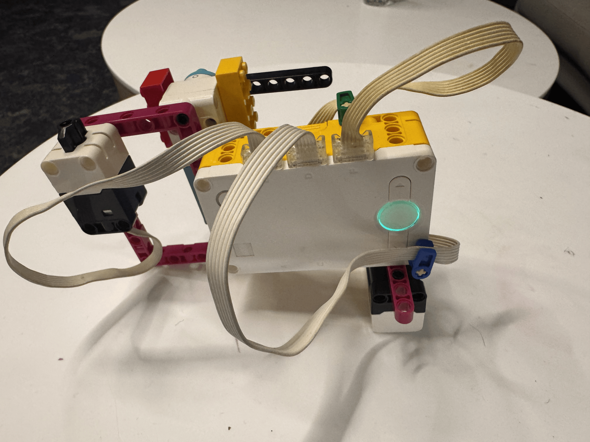
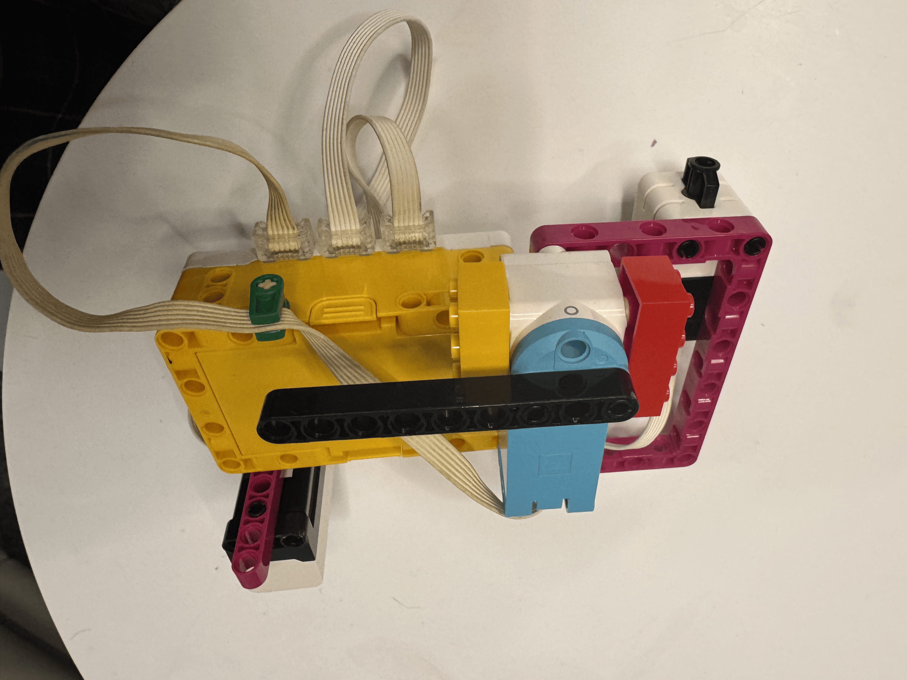

For this project, I used a k nearest neighbor classification algorithm to classify the height of an object. I used a distance sensor to measure the distance of an object and labeled it using the absolute position of the motor as either short or tall. By using this method, I was able to accurately classify the height of an object based on its distance from the sensor and what we labeled it. During the inferencing phase, I used the same distance sensor to measure the distance of an object and compared it to the training data to classify it as either short or tall. Then the motor would rotate to either negative or positive 90 (left and right) to indicate the height as tall or short. I didn't have many problems during this project, but I wonder if its possible to preload the training data instead in order to make it more reliable and consistent. Besides the code and technical aspects, I wanted to make the device more ergonomic and user friendly. I tried to model it after a barcode scanner, but with the scanner pointed directly down.
# Setup: Distance Sensor on D, Force Sensor on B, and motor on F.
# Press the right hub button to finish training.
# Press the Force Sensor to save a training example or classify a distance.
# Motor positions -180° to -10° label an example small.
# Motor positions +10° to +180° label an example tall.
# During inference, small moves the motor to -90° and tall to +90°.
from hub import port, button, light_matrix
import runloop
import distance_sensor
import force_sensor
import motor
# Set the edges of the motor's center gap during training.
LEFT_EDGE = -10
RIGHT_EDGE = 10
# Set the motor's inference target positions and movement speed.
SMALL_POSITION = -90
TALL_POSITION = 90
MOTOR_SPEED = 300
async def main():
##### Training mode #####
# Store each training distance with its small or tall label.
training_distances = []
training_labels = []
# Collect examples until the right hub button is pressed.
while not button.pressed(button.RIGHT):
if force_sensor.pressed(port.B):
# Read the Distance Sensor on port D.
measured_distance = distance_sensor.distance(port.D)
if measured_distance == -1:
# Skip readings when the Distance Sensor has no valid measurement.
print("No valid distance. Example not saved.")
else:
# Read the motor position on port F to choose the training label.
motor_position = motor.absolute_position(port.F)
if motor_position <= LEFT_EDGE:
# The motor is on the left side, so label this example small.
label = "S"
elif motor_position >= RIGHT_EDGE:
# The motor is on the right side, so label this example tall.
label = "T"
else:
# Skip examples when the motor is in the center gap.
label = ""
if label != "":
# Save the distance and label together.
training_distances.append(measured_distance)
training_labels.append(label)
await light_matrix.write(label)
print("Saved:", measured_distance, "mm,", label)
else:
# Report that this example was inside the center gap.
print("Motor is in the center gap. Example not saved.")
# Wait for the Force Sensor to be released before accepting another press.
while force_sensor.pressed(port.B):
await runloop.sleep_ms(20)
# Pause briefly before checking again.
await runloop.sleep_ms(20)
# Wait for the right hub button to be released before inference starts.
while button.pressed(button.RIGHT):
await runloop.sleep_ms(20)
##### Inference mode #####
# Use each Force Sensor press to classify one distance.
while True:
if force_sensor.pressed(port.B):
# Read the Distance Sensor on port D.
measured_distance = distance_sensor.distance(port.D)
if measured_distance == -1:
# Handle the Distance Sensor's no-valid-reading value.
print("No valid distance to classify.")
elif len(training_distances) == 0:
# Classification requires at least one saved training example.
print("No training examples were saved.")
else:
# Start with the first saved distance as the closest example.
nearest_index = 0
smallest_difference = abs(
measured_distance - training_distances[0]
)
# Find which saved distance is closest to the new measurement.
for index in range(1, len(training_distances)):
difference = abs(
measured_distance - training_distances[index]
)
if difference < smallest_difference:
smallest_difference = difference
nearest_index = index
# Get the label of the closest training example.
prediction = training_labels[nearest_index]
if prediction == "T":
# Move the motor on port F to +90° for a tall prediction.
await motor.run_to_absolute_position(
port.F,
TALL_POSITION,
MOTOR_SPEED
)
else:
# Move the motor on port F to -90° for a small prediction.
await motor.run_to_absolute_position(
port.F,
SMALL_POSITION,
MOTOR_SPEED
)
# Show and print the predicted label.
await light_matrix.write(prediction)
print("Distance:", measured_distance, "mm. Prediction:", prediction)
# Wait for the Force Sensor to be released before another classification.
while force_sensor.pressed(port.B):
await runloop.sleep_ms(20)
# Pause briefly before checking the Force Sensor again.
await runloop.sleep_ms(20)
runloop.run(main())